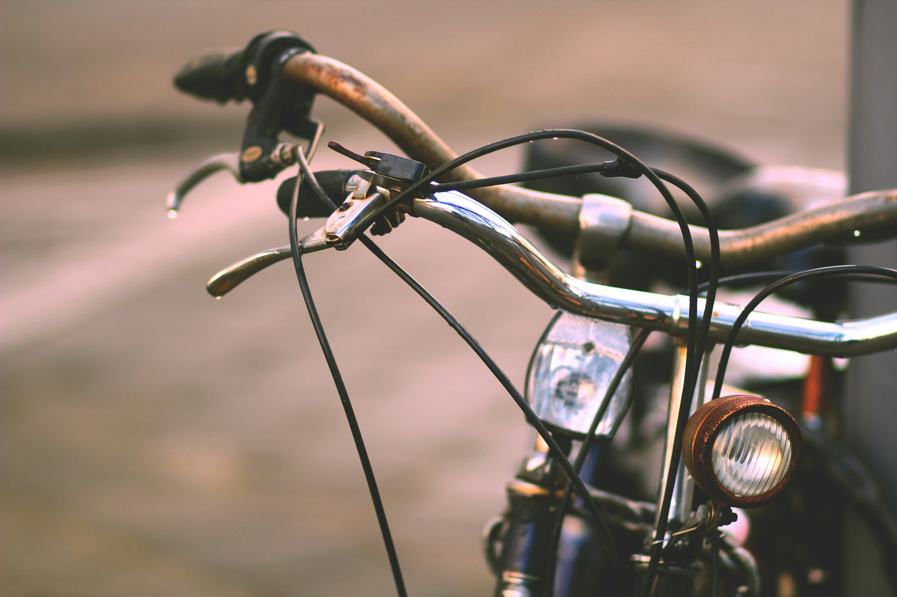
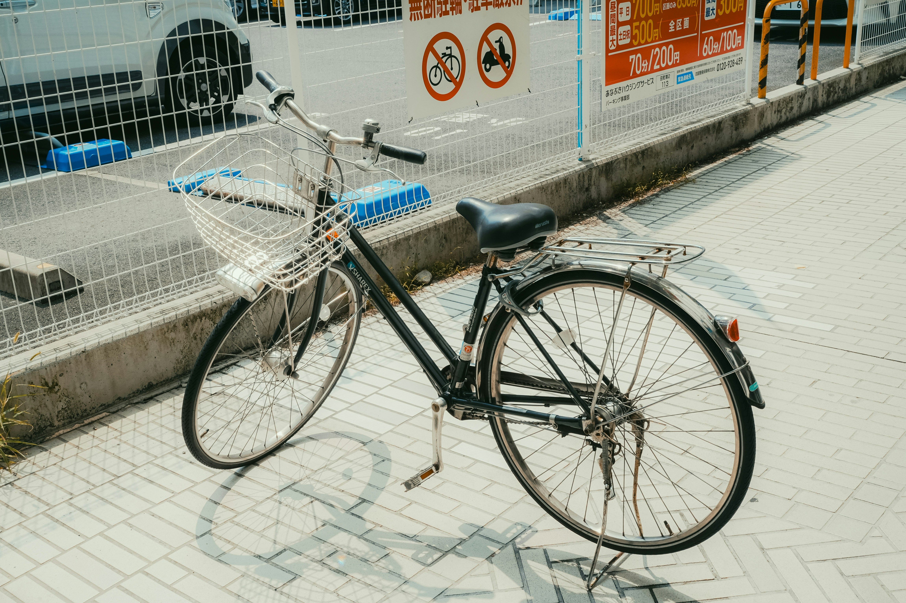
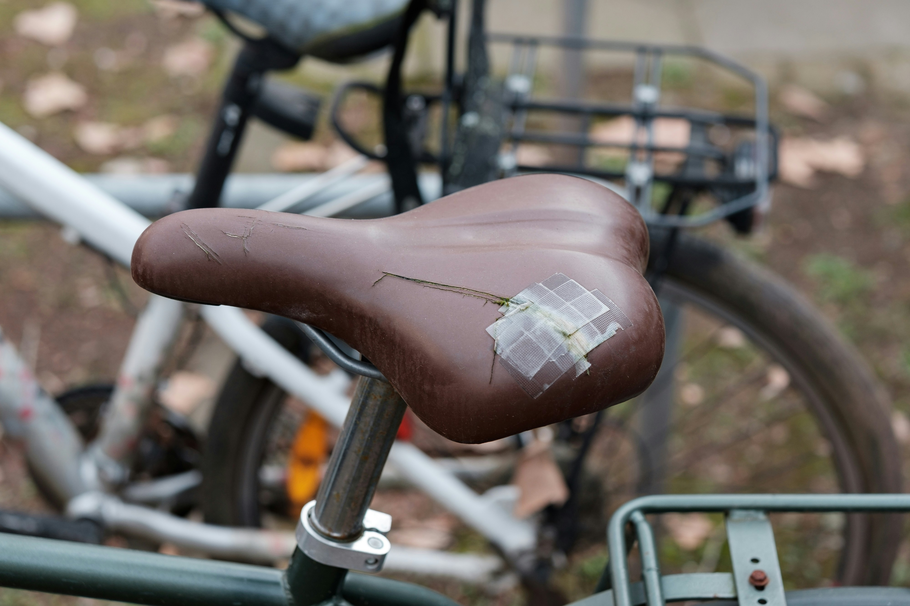
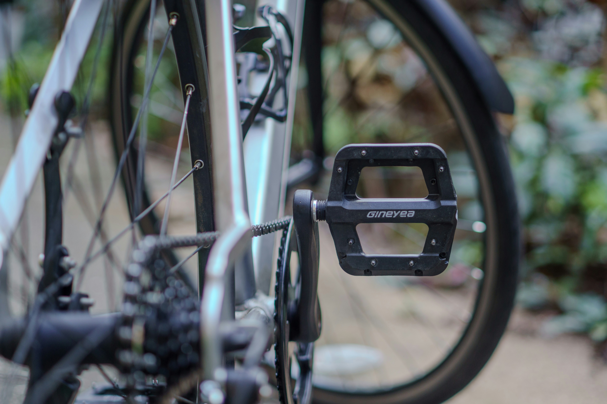

Read what the community is working on.

We haven't started development on these parts yet. If you want to help us take care of bicycles please start a thread.

Handlebars

Rack

Saddle

Pedals

Lights
Add a page where people can ask questions and start a thread.
Design Requirements
Most DIY bike parts are designed to be made alone, at home, with basic tools. UpKeep parts are not.
By making together in a shared workshop, with better machines and more experienced hands around, we can achieve a quality that simply isn't possible at the kitchen table. The parts in this library look and feel different from existing DIY solutions because they were held to a higher standard from the start.
These requirements are what defined that standard. They are the foundation every UpKeep part is built on, and they are open to anyone who wants to design something new.
- The making process should be pleasurable.
- The machines should be interesting to use.
- The machines should be easy to use (understandable without explanation).
- The machine must be safe to use.
- The machine should fit in the context of a makerspace or bicycle kitchen.
- The machines can be powered by 220 volt but are preferably hand powered.
- Making and installing the part should not take longer than 1 hour.
- The parts must have similar durability to the original part.
- The part must be weather resistant.
- The parts must keep the same functional characteristics as the original part.
- The part's price should not exceed the price of repair at a repair shop*.
- The user should be allowed to customize the part.
- The parts should fit any city bike (see Target bicycle).
- Should be as sustainable as the original part.
- The machines should require zero to no maintenance.
- The process could teach people how bike parts are made.
- The part could improve the current design of bicycle parts to support product care.
* This was used as a guideline. The price people are willing to pay is determined during user testing.